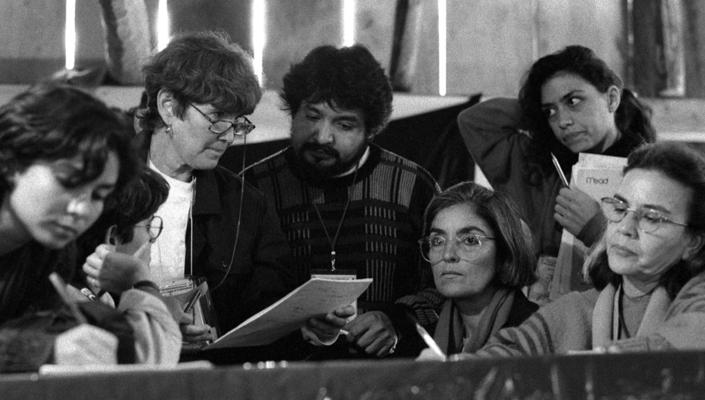
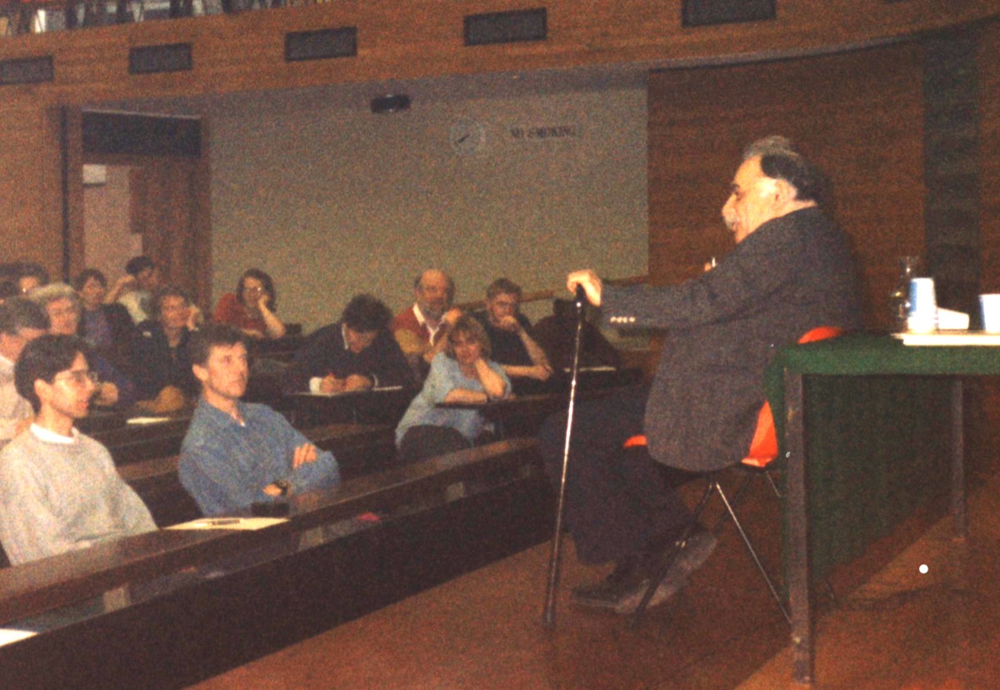
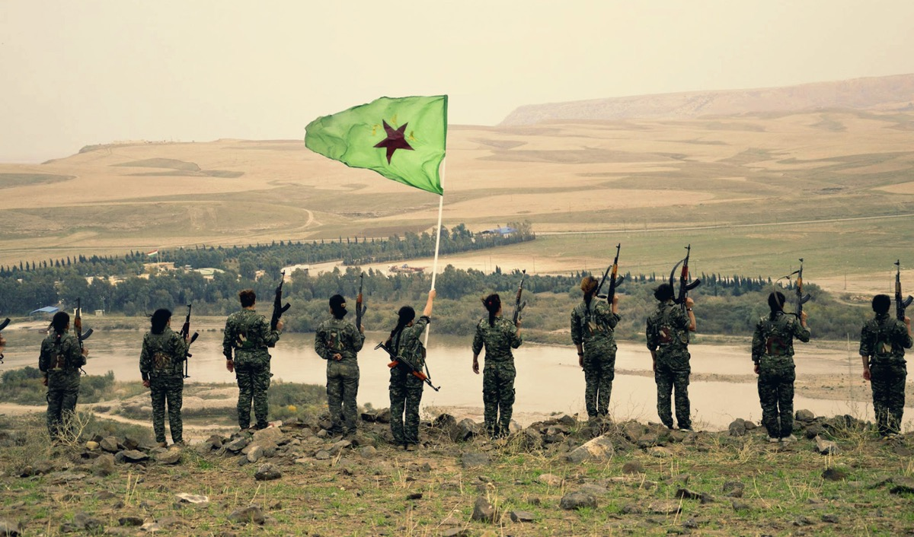
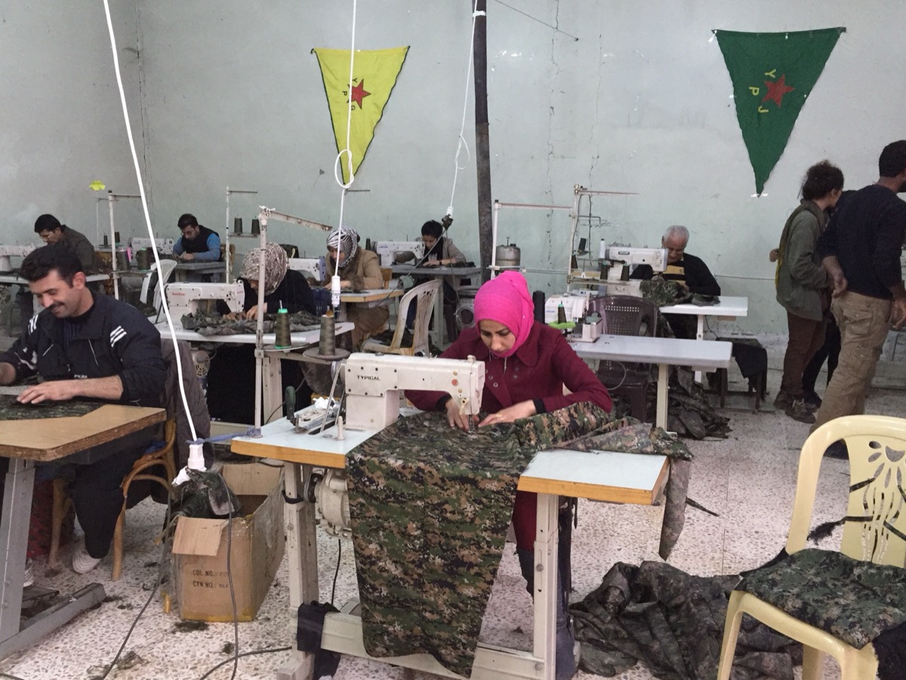
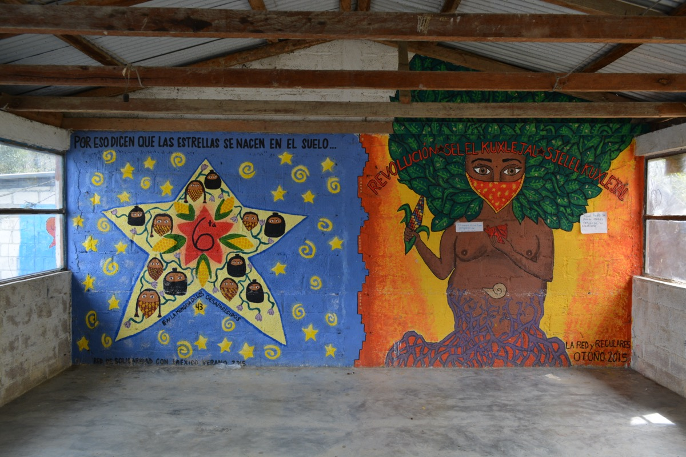
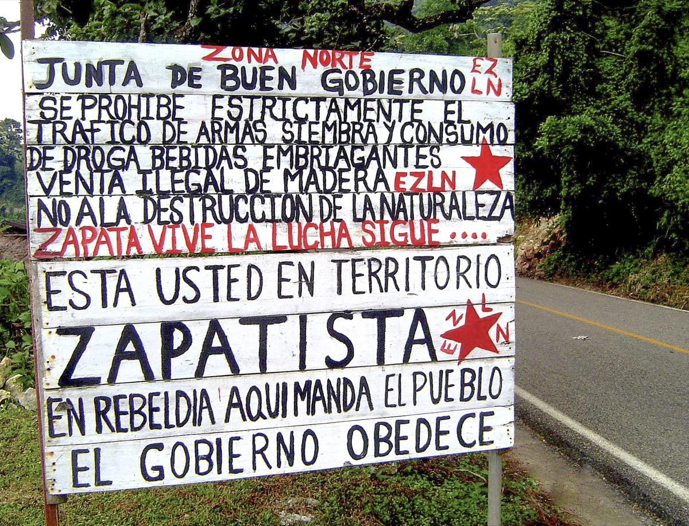
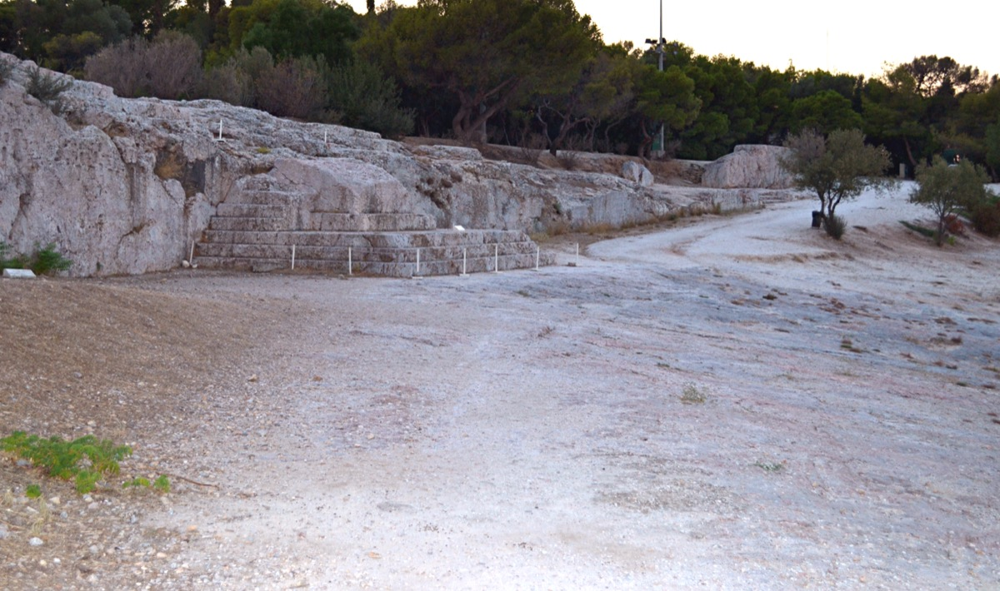
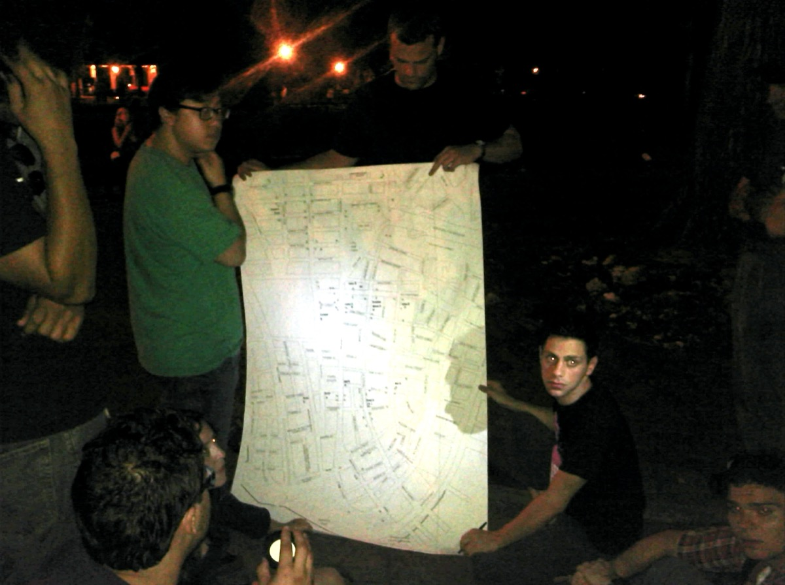
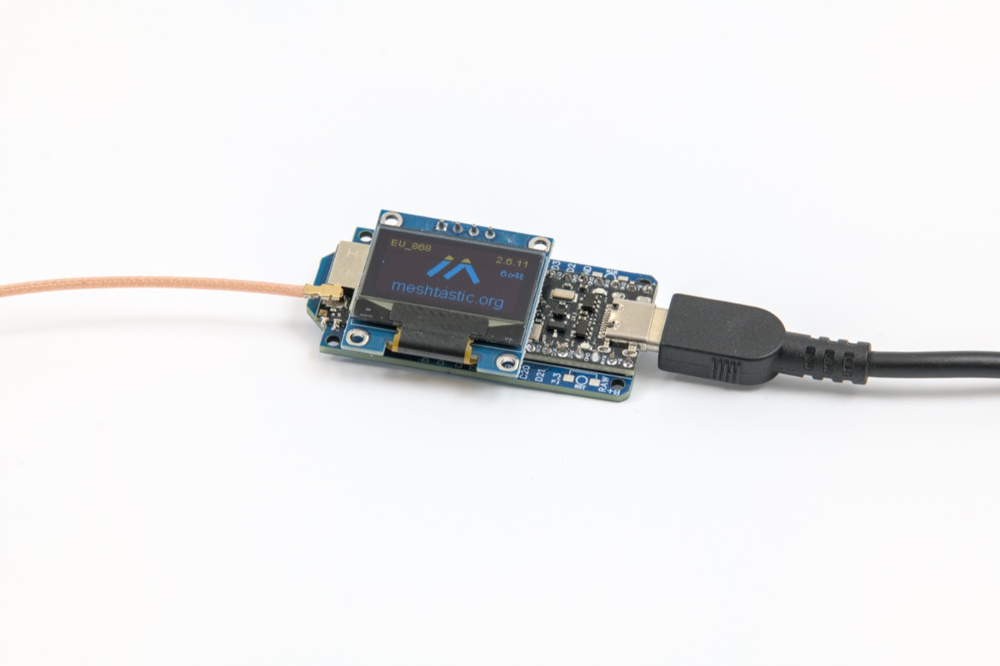

We are building the system that makes the old system irrelevant.
Not through insurrection. Not through electoral capture. Through the patient construction of functional democratic infrastructure that demonstrably outperforms existing institutions, until the question is no longer whether to change the system, but why the old one is still running at all.
The values are the architecture.
Before the tools, before the assemblies, before the federation, there is a question that every political project must answer and that most refuse to ask: what kind of people are we trying to become? PRAXIS is not values-neutral infrastructure. The ethics are load-bearing. They are not decorative language applied after the system is designed. They are the design constraints that determine what the system can and cannot be.
The intellectual lineage of the practice.
PRAXIS is not a novel political theory. It is the practical implementation of ideas that have been tested (in assemblies, in autonomous territories, in revolutionary experiments) across centuries and continents. The methodology directly encodes the structural lessons of these movements: what worked, what failed, and why.







Seven functions, filled by the ecosystem.
PRAXIS is organized around seven functional needs that any community practicing democratic self-governance will encounter. Each function is filled by existing open-source tools, not custom software. What is shared across the network is the practice, not the product. No single tool is a dependency.
Assemblies without power are book clubs.
The most beautifully designed governance platform in the world is worthless if the decisions it produces have no binding force. People will attend one assembly out of curiosity. They will attend a second if the first one was good. They will not attend a fifth if nothing they decided in the first four actually changed anything. The question that determines whether PRAXIS succeeds or dies is not technical. It is political: how do assemblies get teeth?

Harvest the ecosystem. Do not reinvent it.
PRAXIS is not a single application. It is a strategy for composing existing open-source tools into a coherent infrastructure for democratic self-governance. The ecosystem of resilient, democratic, and decentralized technology is already large and growing. The work is curation, integration, and training, not development from scratch.

The Civic Engine.
The engagement layer that converts real-world civic participation into a structured, visible progression system, and converts participants into organizers. The Civic Engine is not a simulation of democratic practice. It is actual democratic practice, with a progression layer on top that makes the work legible, compelling, and communal for people who have never attended an assembly, canvassed a block, or thought about how their city actually governs itself.
The movement's media operation.
As sophisticated as the practice itself. The communications infrastructure is not an afterthought. Most movements build excellent organizing infrastructure and fail because no one outside the existing movement knows it exists, or because corporate media defines their narrative before they establish their own. PRAXIS builds its media operation in parallel with the assemblies, from the first month of operation.
Federation architecture for national scale.
Every successful dual power movement has encountered the same structural bottleneck: how to expand from one city to many without either centralizing control or fragmenting into disconnected local projects. PRAXIS implements the same confederal principle as the Zapatistas and Rojava, as a coordination practice supported by technology.
Five-phase build, five tracks in parallel.
National scaling begins in parallel with the founding city proof of concept, not sequentially following it. Five tracks run simultaneously across five phases. By the final phase, PRAXIS is not a single-city project. It is a network.
Working groups: how the build is organized.
PRAXIS is built by working groups, not committees. Each group owns a domain, makes decisions within that domain, and reports to the network through regular coordination. Groups operate with maximum autonomy and minimum bureaucracy.
Team, budget, and operational requirements.
The gap between this document and a functioning network is not a gap of knowledge, strategy, or network. It is a gap of building, testing, deploying, and iterating. This section documents what the build actually requires in concrete terms: team composition, capital requirements, and grant strategy.
| Role | Contribution |
|---|---|
| Platform Architect | Civic Engine development, tool integration, and deployment guide authoring. |
| Academic Research Lead | Research publication program, institutional network access, and economic theory framework. |
| Platform Analytics Lead | Outcome measurement, participation metrics, and grant impact reporting. |
| Organizing Base | Founding city deployment, assembly facilitation, and primary test cohort. |
| Dual Power Economics Lead | Economics layer integration, cooperative network access, and community trust. |
| Video Production | Short-form and documentary content production for the entire video channel. |
| Visual Identity | Comprehensive brand system design. One-time commission with compounding value. |
| City Node Organizers | Pre-organizing in allied cities and federation pilot management. |
| Line Item | Estimated Cost | Notes |
|---|---|---|
| Visual identity design | $3,000-8,000 | One-time commission. Professional brand system. Compounds in value with every subsequent city deployment and media production. |
| Hosting infrastructure | $200-500 / mo | Local infrastructure covers founding city production. Cloud hosting for redundancy and allied city support as the federation grows. |
| Podcast production | $300-800 / mo | Editing, hosting, and distribution. Significantly reduced with AI-assisted audio production tools. |
| Video equipment | $2,000-4,000 | One-time. Founding city production base. |
| Network travel | $3,000-8,000 / yr | In-person meetings with coalition partners, academic partners, and new city nodes. High-ROI investment for seeding federation. |
| Legal / entity formation | $2,000-5,000 | Platform legal entity. Required for major foundation grant eligibility. |
| Tools and subscriptions | $200-400 / mo | Operating minimums only. |
| Year 1 Total | $30,000-70,000 | Achievable through civic technology and democratic innovation foundation grants |